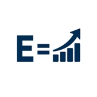

Human UpriseFounded by Equity UpriseThe place for doers.
Turn what you care about into action.
Music. Advocacy. Business. Community. Ideas. Human Uprise is where people show what they are doing, find missions worth joining, and turn attention into proof.
Your Human Uprise profile
Finish your profile.
Pick a username. It is how people find you and mention you, here and on every McCluster product.
Live now
See the work while it happens.
YOUR ACTION
Build a record of doing.
MISSIONS
Choose something worth finishing.
UNDERSTAND → ACT
See what’s happening. Decide what you’ll do.
Live rooms and missions connect attention to measurable work. No points for ideology. No points for outrage. Support does not buy discovery rank.Explore the world
Find a mission or region
Tap a marker or search to discover action around the world.
Loading clipping campaigns…
Pick your move
Missions worth finishing
Find the doers
People taking action
M
Human Uprise
Messages
Human Uprise
Notifications
Front pageYour public home
Open site ↗Password and sign-in
Change your password, or set one if you signed up with Google.
Change passwordYour analytics
Plays, completions, shares and page traffic for your catalogue, from recorded activity.
Open your analyticsYour Action Record
Verified actions, points, cohorts and receipts.
Delete my account
This deletes your Human Uprise profile, posts, messages, missions and your M Account. You have 30 days to change your mind, then it is gone for good.